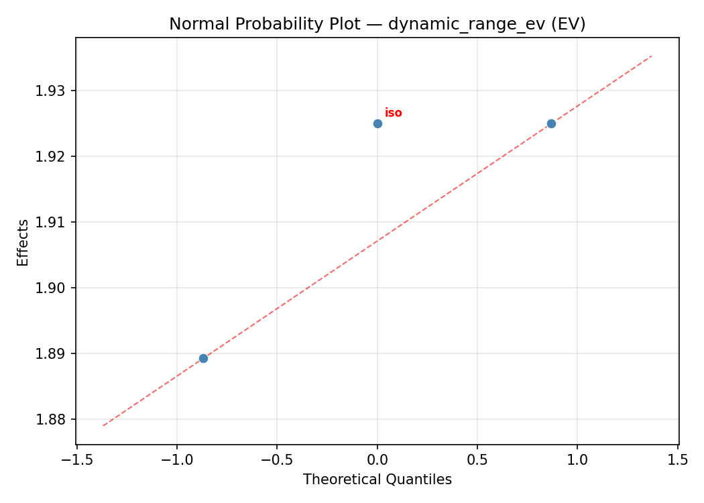
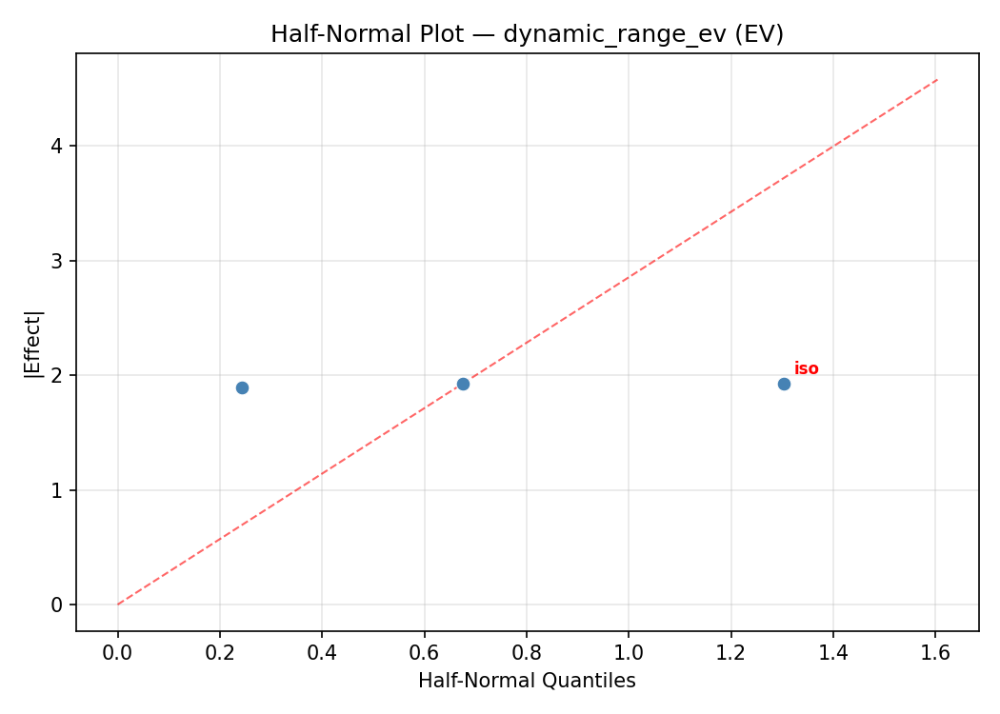
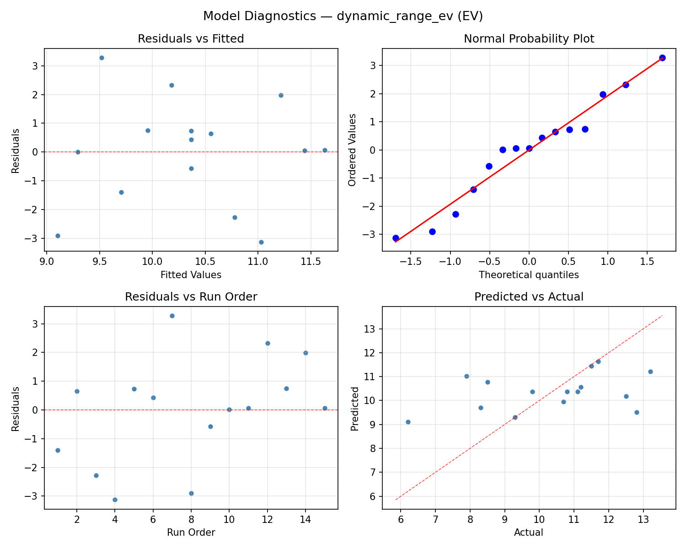
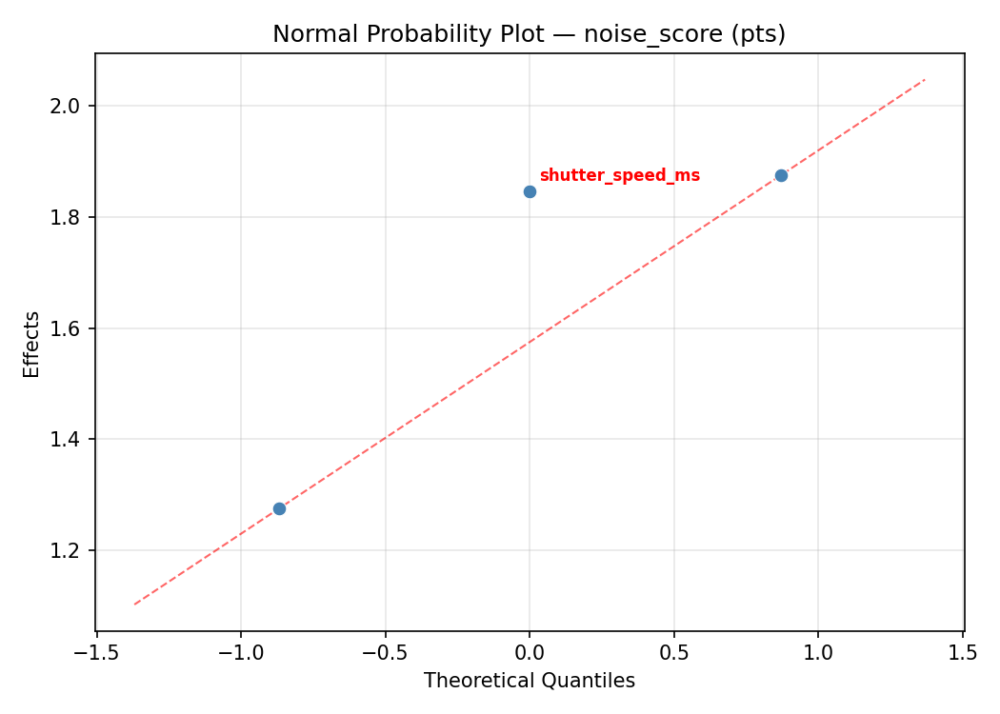
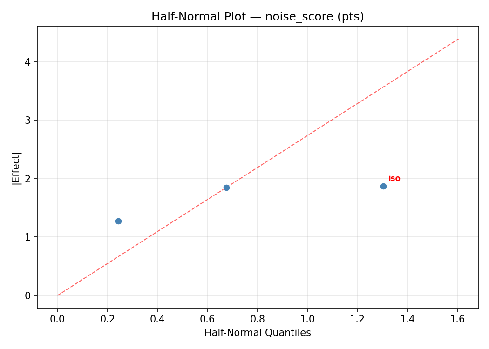
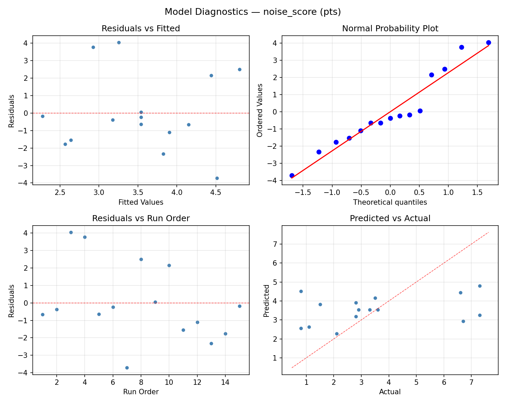

Summary
This experiment investigates landscape photo exposure. Box-Behnken design to maximize dynamic range and minimize noise by tuning ISO, aperture, and shutter speed.
The design varies 3 factors: iso (ISO), ranging from 100 to 3200, aperture (f-stop), ranging from 2.8 to 16, and shutter speed ms (ms), ranging from 1 to 1000. The goal is to optimize 2 responses: dynamic range ev (EV) (maximize) and noise score (pts) (minimize). Fixed conditions held constant across all runs include lens mm = 24, white balance = daylight.
A Box-Behnken design was chosen because it efficiently fits quadratic models with 3 continuous factors while avoiding extreme corner combinations — requiring only 15 runs instead of the 8 needed for a full factorial at two levels.
Quadratic response surface models were fitted to capture potential curvature and factor interactions. The RSM contour plots below visualize how pairs of factors jointly affect each response.
Key Findings
For dynamic range ev, the most influential factors were shutter speed ms (40.4%), aperture (34.8%), iso (24.8%). The best observed value was 13.2 (at iso = 100, aperture = 9.4, shutter speed ms = 1000).
For noise score, the most influential factors were shutter speed ms (43.1%), aperture (40.9%), iso (15.9%). The best observed value was 0.8 (at iso = 1650, aperture = 9.4, shutter speed ms = 500.5).
Recommended Next Steps
- Run confirmation experiments at the predicted optimal settings to validate the model.
- Consider whether any fixed factors should be varied in a future study.
Experimental Setup
Factors
| Factor | Low | High | Unit |
|---|
iso | 100 | 3200 | ISO |
aperture | 2.8 | 16 | f-stop |
shutter_speed_ms | 1 | 1000 | ms |
Fixed: lens_mm = 24, white_balance = daylight
Responses
| Response | Direction | Unit |
|---|
dynamic_range_ev | ↑ maximize | EV |
noise_score | ↓ minimize | pts |
Configuration
{
"metadata": {
"name": "Landscape Photo Exposure",
"description": "Box-Behnken design to maximize dynamic range and minimize noise by tuning ISO, aperture, and shutter speed"
},
"factors": [
{
"name": "iso",
"levels": [
"100",
"3200"
],
"type": "continuous",
"unit": "ISO"
},
{
"name": "aperture",
"levels": [
"2.8",
"16"
],
"type": "continuous",
"unit": "f-stop"
},
{
"name": "shutter_speed_ms",
"levels": [
"1",
"1000"
],
"type": "continuous",
"unit": "ms"
}
],
"fixed_factors": {
"lens_mm": "24",
"white_balance": "daylight"
},
"responses": [
{
"name": "dynamic_range_ev",
"optimize": "maximize",
"unit": "EV"
},
{
"name": "noise_score",
"optimize": "minimize",
"unit": "pts"
}
],
"settings": {
"operation": "box_behnken",
"test_script": "use_cases/147_landscape_exposure/sim.sh"
}
}
Experimental Matrix
The Box-Behnken Design produces 15 runs. Each row is one experiment with specific factor settings.
| Run | iso | aperture | shutter_speed_ms |
|---|
| 1 | 1650 | 2.8 | 1 |
| 2 | 1650 | 9.4 | 500.5 |
| 3 | 3200 | 9.4 | 1000 |
| 4 | 3200 | 9.4 | 1 |
| 5 | 1650 | 9.4 | 500.5 |
| 6 | 1650 | 9.4 | 500.5 |
| 7 | 100 | 9.4 | 1000 |
| 8 | 3200 | 2.8 | 500.5 |
| 9 | 1650 | 2.8 | 1000 |
| 10 | 3200 | 16 | 500.5 |
| 11 | 100 | 9.4 | 1 |
| 12 | 1650 | 16 | 1000 |
| 13 | 100 | 2.8 | 500.5 |
| 14 | 100 | 16 | 500.5 |
| 15 | 1650 | 16 | 1 |
Step-by-Step Workflow
1
Preview the design
$ python doe.py info --config use_cases/147_landscape_exposure/config.json
2
Generate the runner script
$ python doe.py generate --config use_cases/147_landscape_exposure/config.json \
--output use_cases/147_landscape_exposure/results/run.sh --seed 42
3
Execute the experiments
$ bash use_cases/147_landscape_exposure/results/run.sh
4
Analyze results
$ python doe.py analyze --config use_cases/147_landscape_exposure/config.json
5
Get optimization recommendations
$ python doe.py optimize --config use_cases/147_landscape_exposure/config.json
6
Multi-objective optimization
With 2 competing responses, use --multi to find the best compromise via Derringer–Suich desirability.
$ python doe.py optimize --config use_cases/147_landscape_exposure/config.json --multi
7
Generate the HTML report
$ python doe.py report --config use_cases/147_landscape_exposure/config.json \
--output use_cases/147_landscape_exposure/results/report.html
Features Exercised
| Feature | Value |
|---|
| Design type | box_behnken |
| Factor types | continuous (all 3) |
| Arg style | double-dash |
| Responses | 2 (dynamic_range_ev ↑, noise_score ↓) |
| Total runs | 15 |
Analysis Results
Generated from actual experiment runs using the DOE Helper Tool.
Response: dynamic_range_ev
Top factors: shutter_speed_ms (40.4%), aperture (34.8%), iso (24.8%).
ANOVA
| Source | DF | SS | MS | F | p-value |
|---|
| Source | DF | SS | MS | F | p-value |
| iso | 2 | 2.4462 | 1.2231 | 0.316 | 0.7377 |
| aperture | 2 | 3.8758 | 1.9379 | 0.501 | 0.6239 |
| shutter_speed_ms | 2 | 6.0673 | 3.0336 | 0.784 | 0.4888 |
| Lack | of | Fit | 6 | 35.6240 | 5.9373 |
| Pure | Error | 2 | 7.7400 | | |
| Error | 8 | 43.3640 | 3.8700 | | |
| Total | 14 | 55.7533 | 3.9824 | | |
Pareto Chart

Main Effects Plot

Normal Probability Plot of Effects

Half-Normal Plot of Effects

Model Diagnostics

Response: noise_score
Top factors: shutter_speed_ms (43.1%), aperture (40.9%), iso (15.9%).
ANOVA
| Source | DF | SS | MS | F | p-value |
|---|
| Source | DF | SS | MS | F | p-value |
| iso | 2 | 1.1974 | 0.5987 | 0.071 | 0.9323 |
| aperture | 2 | 8.2599 | 4.1300 | 0.488 | 0.6310 |
| shutter_speed_ms | 2 | 9.1142 | 4.5571 | 0.538 | 0.6034 |
| Lack | of | Fit | 6 | 40.8978 | 6.8163 |
| Pure | Error | 2 | 16.9267 | | |
| Error | 8 | 57.8244 | 8.4633 | | |
| Total | 14 | 76.3960 | 5.4569 | | |
Pareto Chart

Main Effects Plot

Normal Probability Plot of Effects

Half-Normal Plot of Effects

Model Diagnostics

Response Surface Plots
3D surfaces fitted with quadratic RSM. Red dots are observed data points.
dynamic range ev aperture vs shutter speed ms

dynamic range ev iso vs aperture

dynamic range ev iso vs shutter speed ms

noise score aperture vs shutter speed ms

noise score iso vs aperture

noise score iso vs shutter speed ms

Multi-Objective Optimization
When responses compete, Derringer–Suich desirability finds the best compromise.
Each response is scaled to a 0–1 desirability, then combined via a weighted geometric mean.
Overall Desirability
D = 0.9966
Per-Response Desirability
| Response | Weight | Desirability | Predicted | Dir |
|---|
dynamic_range_ev |
1.5 |
|
13.63 1.0000 13.63 EV |
↑ |
noise_score |
1.0 |
|
0.54 0.9915 0.54 pts |
↓ |
Recommended Settings
| Factor | Value |
|---|
iso | 3200 ISO |
aperture | 2.8 f-stop |
shutter_speed_ms | 100.9 ms |
Source: from RSM model prediction
Trade-off Summary
Sacrifice = how much worse than single-objective best.
| Response | Predicted | Best Observed | Sacrifice |
|---|
noise_score | 0.54 | 0.80 | -0.26 |
Top 3 Runs by Desirability
| Run | D | Factor Settings |
|---|
| #7 | 0.9230 | iso=3200, aperture=2.8, shutter_speed_ms=500.5 |
| #11 | 0.8007 | iso=1650, aperture=16, shutter_speed_ms=1000 |
Model Quality
| Response | R² | Type |
|---|
noise_score | 0.6680 | quadratic |
Full Multi-Objective Output
============================================================
MULTI-OBJECTIVE OPTIMIZATION
Method: Derringer-Suich Desirability Function
============================================================
Overall desirability: D = 0.9966
Response Weight Desirability Predicted Direction
---------------------------------------------------------------------
dynamic_range_ev 1.5 1.0000 13.63 EV ↑
noise_score 1.0 0.9915 0.54 pts ↓
Recommended settings:
iso = 3200 ISO
aperture = 2.8 f-stop
shutter_speed_ms = 100.9 ms
(from RSM model prediction)
Trade-off summary:
dynamic_range_ev: 13.63 (best observed: 13.20, sacrifice: -0.43)
noise_score: 0.54 (best observed: 0.80, sacrifice: -0.26)
Model quality:
dynamic_range_ev: R² = 0.6397 (quadratic)
noise_score: R² = 0.6680 (quadratic)
Top 3 observed runs by overall desirability:
1. Run #14 (D=0.9545): iso=3200, aperture=9.4, shutter_speed_ms=1
2. Run #7 (D=0.9230): iso=3200, aperture=2.8, shutter_speed_ms=500.5
3. Run #11 (D=0.8007): iso=1650, aperture=16, shutter_speed_ms=1000
Full Analysis Output
=== Main Effects: dynamic_range_ev ===
Factor Effect Std Error % Contribution
--------------------------------------------------------------
shutter_speed_ms 1.5357 0.5153 40.4%
aperture 1.3250 0.5153 34.8%
iso 0.9429 0.5153 24.8%
=== ANOVA Table: dynamic_range_ev ===
Source DF SS MS F p-value
-----------------------------------------------------------------------------
iso 2 2.4462 1.2231 0.316 0.7377
aperture 2 3.8758 1.9379 0.501 0.6239
shutter_speed_ms 2 6.0673 3.0336 0.784 0.4888
Lack of Fit 6 35.6240 5.9373 1.534 0.4456
Pure Error 2 7.7400 3.8700
Error 8 43.3640 3.8700
Total 14 55.7533 3.9824
=== Summary Statistics: dynamic_range_ev ===
iso:
Level N Mean Std Min Max
------------------------------------------------------------
100 4 9.7000 1.8619 7.9000 11.5000
1650 7 10.6429 1.5863 8.5000 13.2000
3200 4 10.5500 3.0447 6.2000 12.8000
aperture:
Level N Mean Std Min Max
------------------------------------------------------------
16 4 9.8500 2.0761 8.3000 12.8000
2.8 4 11.1750 0.4113 10.7000 11.7000
9.4 7 10.2000 2.5311 6.2000 13.2000
shutter_speed_ms:
Level N Mean Std Min Max
------------------------------------------------------------
1 4 9.3500 2.4960 6.2000 11.5000
1000 4 10.4750 2.0565 7.9000 12.5000
500.5 7 10.8857 1.7468 8.3000 13.2000
=== Main Effects: noise_score ===
Factor Effect Std Error % Contribution
--------------------------------------------------------------
shutter_speed_ms 1.8536 0.6032 43.1%
aperture 1.7607 0.6032 40.9%
iso 0.6857 0.6032 15.9%
=== ANOVA Table: noise_score ===
Source DF SS MS F p-value
-----------------------------------------------------------------------------
iso 2 1.1974 0.5987 0.071 0.9323
aperture 2 8.2599 4.1300 0.488 0.6310
shutter_speed_ms 2 9.1142 4.5571 0.538 0.6034
Lack of Fit 6 40.8978 6.8163 0.805 0.6462
Pure Error 2 16.9267 8.4633
Error 8 57.8244 8.4633
Total 14 76.3960 5.4569
=== Summary Statistics: noise_score ===
iso:
Level N Mean Std Min Max
------------------------------------------------------------
100 4 3.5500 2.3345 1.1000 6.7000
1650 7 3.7857 2.3547 0.8000 7.3000
3200 4 3.1000 2.9200 0.8000 7.3000
aperture:
Level N Mean Std Min Max
------------------------------------------------------------
16 4 3.8000 2.6696 0.8000 7.3000
2.8 4 2.3250 0.6551 1.5000 2.9000
9.4 7 4.0857 2.7528 0.8000 7.3000
shutter_speed_ms:
Level N Mean Std Min Max
------------------------------------------------------------
1 4 4.6250 3.1658 1.1000 7.3000
1000 4 3.8000 2.0281 2.1000 6.7000
500.5 7 2.7714 2.0361 0.8000 6.6000
Optimization Recommendations
=== Optimization: dynamic_range_ev ===
Direction: maximize
Best observed run: #14
iso = 100
aperture = 9.4
shutter_speed_ms = 1000
Value: 13.2
RSM Model (linear, R² = 0.2732, Adj R² = 0.0750):
Coefficients:
intercept +10.3667
iso -0.9000
aperture +0.2625
shutter_speed_ms +1.0125
RSM Model (quadratic, R² = 0.7723, Adj R² = 0.3626):
Coefficients:
intercept +12.0000
iso -0.9000
aperture +0.2625
shutter_speed_ms +1.0125
iso*aperture +0.4000
iso*shutter_speed_ms -1.1000
aperture*shutter_speed_ms -0.4250
iso^2 -0.3375
aperture^2 -2.4125
shutter_speed_ms^2 -0.3125
Curvature analysis:
aperture coef=-2.4125 concave (has a maximum)
iso coef=-0.3375 concave (has a maximum)
shutter_speed_ms coef=-0.3125 concave (has a maximum)
Notable interactions:
iso*shutter_speed_ms coef=-1.1000 (antagonistic)
aperture*shutter_speed_ms coef=-0.4250 (antagonistic)
iso*aperture coef=+0.4000 (synergistic)
Predicted optimum (from quadratic model, at observed points):
iso = 100
aperture = 9.4
shutter_speed_ms = 1000
Predicted value: 14.3625
Surface optimum (via L-BFGS-B, quadratic model):
iso = 100
aperture = 8.63057
shutter_speed_ms = 1000
Predicted value: 14.3953
Model quality: Good fit — general trends are captured, some noise remains.
Factor importance:
1. aperture (effect: 2.6, contribution: 40.7%)
2. shutter_speed_ms (effect: 2.0, contribution: 31.4%)
3. iso (effect: 1.8, contribution: 27.9%)
=== Optimization: noise_score ===
Direction: minimize
Best observed run: #7
iso = 1650
aperture = 9.4
shutter_speed_ms = 500.5
Value: 0.8
RSM Model (linear, R² = 0.2599, Adj R² = 0.0580):
Coefficients:
intercept +3.5400
iso +0.9625
aperture -0.5875
shutter_speed_ms -1.1000
RSM Model (quadratic, R² = 0.7058, Adj R² = 0.1762):
Coefficients:
intercept +1.7000
iso +0.9625
aperture -0.5875
shutter_speed_ms -1.1000
iso*aperture +0.5500
iso*shutter_speed_ms +1.6250
aperture*shutter_speed_ms +0.9750
iso^2 +0.9750
aperture^2 +2.0750
shutter_speed_ms^2 +0.4000
Curvature analysis:
aperture coef=+2.0750 convex (has a minimum)
iso coef=+0.9750 convex (has a minimum)
shutter_speed_ms coef=+0.4000 convex (has a minimum)
Notable interactions:
iso*shutter_speed_ms coef=+1.6250 (synergistic)
aperture*shutter_speed_ms coef=+0.9750 (synergistic)
iso*aperture coef=+0.5500 (synergistic)
Predicted optimum (from quadratic model, at observed points):
iso = 1650
aperture = 2.8
shutter_speed_ms = 1
Predicted value: 6.8375
Surface optimum (via L-BFGS-B, quadratic model):
iso = 100
aperture = 9.65843
shutter_speed_ms = 1000
Predicted value: -0.6157
Model quality: Good fit — general trends are captured, some noise remains.
Factor importance:
1. aperture (effect: 2.6, contribution: 38.3%)
2. shutter_speed_ms (effect: 2.2, contribution: 32.9%)
3. iso (effect: 1.9, contribution: 28.8%)